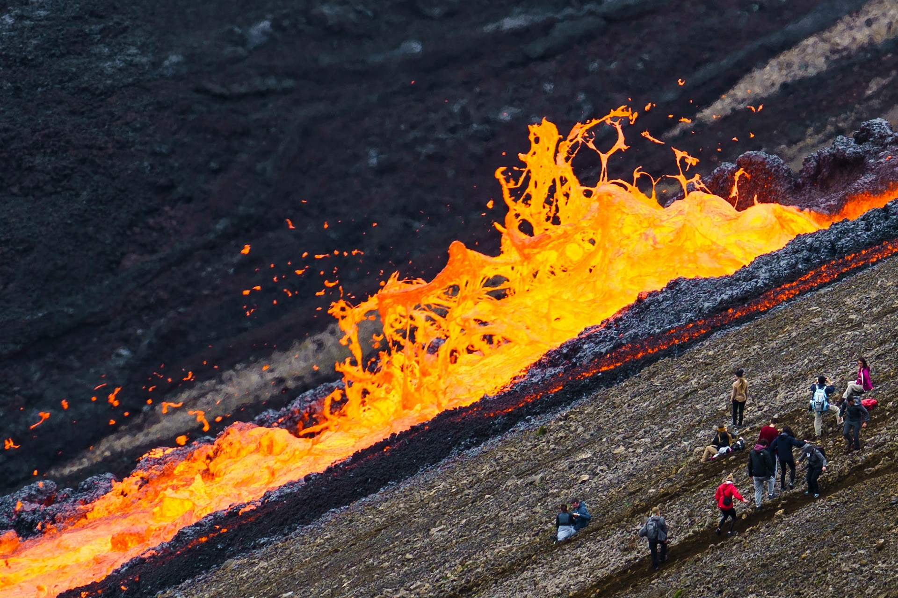
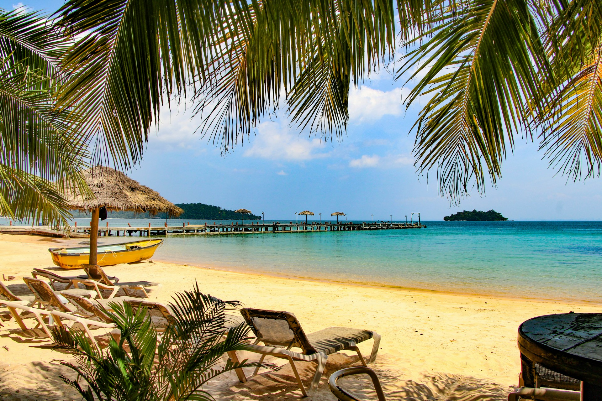
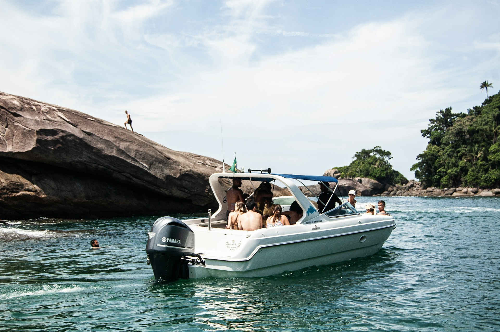
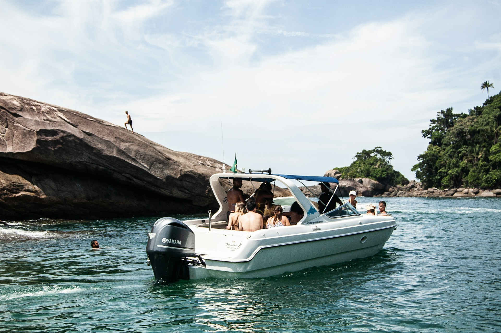
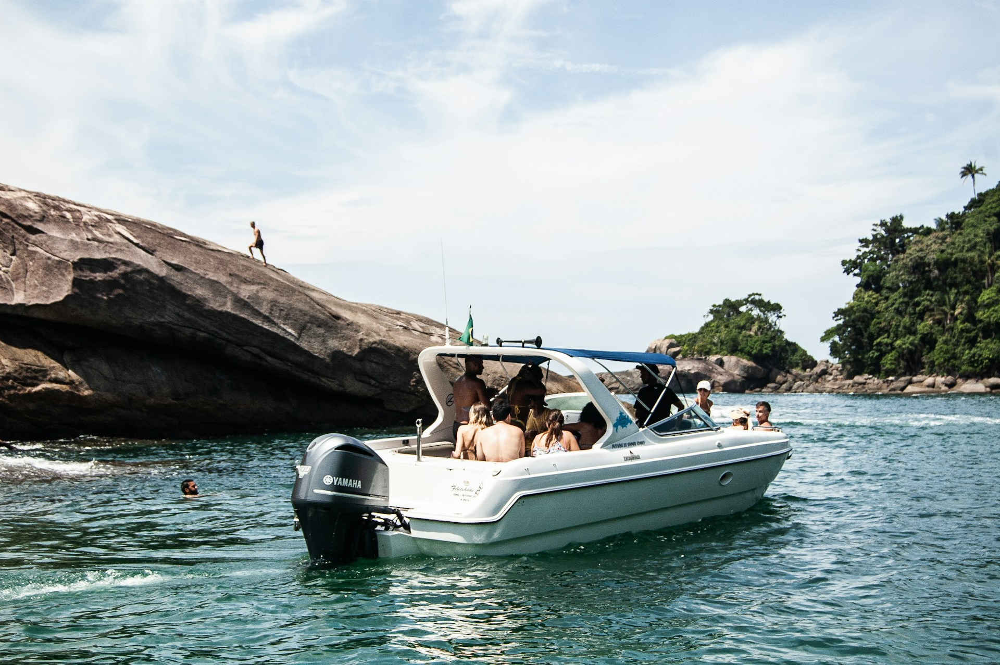

Explore nature. Discover the island's spirit.
Taniti's top sights include rainforest hikes, volcano visits, boat and bus tours, and exploring Taniti City's native architecture and white-sand beaches around Yellow Leaf Bay. Whether you're strolling scenic streets or diving into the rainforest, the island's beauty never stops.


 

